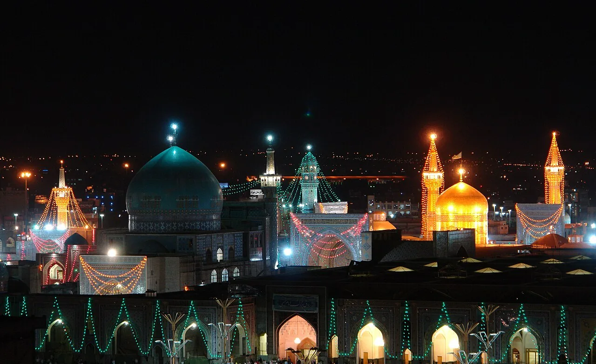

دليل السفر إلى مشهد · السفر إلى مشهد مع الأطفال، زيارة مشهد مع كبار السن، رحلة عائلية إلى مشهد
السفر إلى مشهد مع الأسرة
الإجابة المختصرة
لرحلة عائلية إلى مشهد، نظّم البرنامج حول احتياجات الأطفال وكبار السن، لا حول كثرة المعالم. اختر تنقلاً وإقامة مناسبين، وخفف التنقلات اليومية، واترك وقتاً للطعام والراحة، وجهّز وثائق السفر وما يحتاجه أفراد الأسرة. راجع الخطة وفق أعمار المسافرين وقدرتهم وظروف الرحلة.
الرحلة العائلية المريحة ليست الأكثر ازدحاماً بالأنشطة، بل التي تترك وقتاً للراحة وتراعي اختلاف احتياجات أفراد الأسرة. قبل السفر إلى مشهد، فكّر في الإقامة والتنقل والزيارة وخطة التواصل بوصفها أجزاء مترابطة من برنامج واحد.

اختيار إقامة تناسب الجميع
تحقق من سعة الغرفة وعدد الأسرّة والمصعد وسهولة الوصول وسياسة الأطفال. اسأل عن المسافة الفعلية إلى الأماكن التي ستزورها، لا عن وصف «قريب» فقط.
إذا كان أحد أفراد الأسرة يستخدم وسيلة مساعدة للحركة، اطلب تفاصيل دقيقة عن المداخل والممرات والخدمات المتاحة، ولا تعتمد على افتراضات غير مؤكدة.
برنامج يومي واقعي
ضع نشاطاً رئيسياً واحداً في اليوم واترك مساحة للطعام والراحة والتغييرات. يمكن أن تكون العودة إلى الإقامة لفترة استراحة أفضل من مواصلة التنقل إذا شعر الأطفال أو كبار السن بالإرهاق.
اتفقوا على نقطة لقاء واضحة عند زيارة أماكن مزدحمة، واحتفظ الأطفال بوسيلة تواصل مناسبة لعمرهم تحت إشراف البالغين.
الوثائق والصحة الشخصية
تحقق من وثائق السفر ومتطلبات الدخول لكل فرد من الجهات الرسمية قبل الحجز. احتفظ بأرقام الطوارئ ومعلومات التواصل الأساسية بطريقة آمنة.
أحضر الأدوية الشخصية الموصوفة في عبواتها الأصلية مع الوصفات أو الوثائق اللازمة وفق قواعد السفر، واستشر الطبيب بشأن احتياجات السفر الصحية قبل الرحلة. لا تغيّر جرعات الأدوية بناء على نصائح عامة.
التنقل والأمتعة
خفف الأمتعة قدر الإمكان، واحتفظ بالأغراض المهمة في حقيبة يسهل الوصول إليها. إذا كنت تحتاج إلى سيارة أو ترتيب نقل خاص، تحقق من السعة والتوفر وطريقة الالتقاء والسعر النهائي مسبقاً.
لا تضع موعداً مهماً مباشرة بعد الوصول؛ تأخير الرحلة أو استلام الحقائب قد يغير الخطة.
اختيار النشاط حسب العمر
فكر في مدة النشاط وطبيعة المكان واحتياجات الطفل، وليس في شهرة المعلم فقط. قد يناسب الأطفال الصغار مكان قصير الزيارة مع مساحة للراحة، بينما يستطيع الأكبر سناً الاستمتاع ببرنامج أطول بحسب طاقتهم.
ابدأ من دليل الأنشطة في مشهد والرحلات القريبة من المدينة ثم تحقق من مناسبة كل نشاط للعمر.
الحدائق والأنشطة الترفيهية
قبل التوجه إلى حديقة أو مدينة ألعاب أو مركز ترفيهي، تحقق من الموقع الرسمي أو قناة التواصل الموثوقة لمعرفة ساعات العمل والتذاكر والقيود العمرية أو الطولية وما إذا كان النشاط يعمل في ذلك اليوم. لا تعتمد على الأسعار أو الجداول القديمة.
إذا كان الطقس بارداً أو ممطراً، احتفظ بخيار داخلي بديل. لا تفترض أن كل مرفق مناسب للأطفال ذوي الاحتياجات الحركية أو الحسية دون سؤال مسبق.
زيارة الحرم مع الأسرة
اتفقوا على نقطة التقاء واضحة إذا انفصل أفراد الأسرة، واحتفظ الطفل أو مرافقه بوسيلة تعريف مناسبة ورقم تواصل. اتبعوا التعليمات المعلنة في الحرم، واجعلوا الزيارة ملائمة لقدرة الأطفال على المشي والانتظار.
راجع دليل زيارة الحرم ودليل السفر العائلي إلى مشهد لتنظيم بقية الرحلة.
ملف عائلي صغير يسهل يوم السفر
جهّز حقيبة وملفاً منفصلاً يسهل الوصول إليهما عند الحاجة، خصوصاً إذا كان أفراد الأسرة يسافرون مع أطفال أو كبار سن.
- بيانات التواصل مع مرافق الأسرة ومكان الإقامة، مكتوبة على ورقة إلى جانب حفظها في الهاتف.
- الأدوية الشخصية في عبواتها الأصلية، مع الوصفة أو تقرير الطبيب عند الحاجة.
- ملابس إضافية ومستلزمات الطفل والطعام أو الماء المناسب وفق احتياجاته.
- نسخ آمنة من وثائق السفر، مع الاحتفاظ بالأصول في مكان موثوق وعدم إرسالها إلى جهات غير معروفة.
- نقطة التقاء واضحة إذا تفرقت الأسرة في سوق أو مكان مزدحم، وتعليم الطفل طريقة طلب المساعدة من مرافق موثوق.
لا تضع جميع الوثائق والأموال في حقيبة واحدة، وراجع احتياجات كل فرد بدلاً من استخدام قائمة عامة لا تناسب الجميع.
مصادر رسمية ومراجع للتحقق
استخدم هذه الروابط للتحقق من المعلومات قبل الحجز أو الزيارة. قد تتغير الخدمات والأسعار وساعات العمل وقواعد السفر؛ المرجع النهائي هو الجهة المختصة أو مقدم الخدمة في تاريخ رحلتك.
- بوابة Visiting Mashhad – الأنشطة والحدائق المناسبة للعائلات
- بوابة Visiting Mashhad – التخطيط للزيارة وبرامج الأيام
أدلة مرتبطة على الموقع
أسئلة شائعة
كيف أرتب برنامج مشهد مع الأطفال؟
اختر عدداً محدوداً من المحطات، واجعل فترات الراحة والطعام والاحتياجات اليومية جزءاً من البرنامج، مع خطة بديلة عند التعب.
ما الذي أتحقق منه عند حجز الإقامة للعائلة؟
أكد عدد الأسرّة وسعة الغرفة وسياسة أعمار الأطفال والتكلفة الإجمالية والمرافق المطلوبة مباشرة مع مكان الإقامة.
كيف أستعد لزيارة الحرم مع كبار السن؟
خطط لمسافة المشي ووقت الراحة، واستفسر مسبقاً عن التسهيلات التي يحتاجها المسافر ولا تفترض توفرها دون تأكيد.
هل من الأفضل وضع جدول مزدحم لتوفير الوقت؟
غالباً ما يكون البرنامج المرن أكثر ملاءمة للعائلة؛ اترك وقتاً للتنقل والراحة والتغيرات غير المتوقعة.
ما البيانات المهمة للطوارئ العائلية؟
احتفظ بعنوان الإقامة وأرقام التواصل، واتفق مع أفراد الأسرة على نقطة لقاء واضحة، واحفظ الوثائق المهمة بصورة آمنة.
الخطوة التالية
أخبر حسين بعدد أفراد الأسرة وأعمارهم التقريبية ومدة الرحلة والاحتياجات الأساسية فقط؛ لا حاجة لإرسال معلومات شخصية حساسة في أول رسالة.